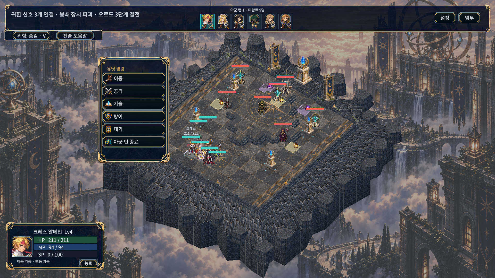
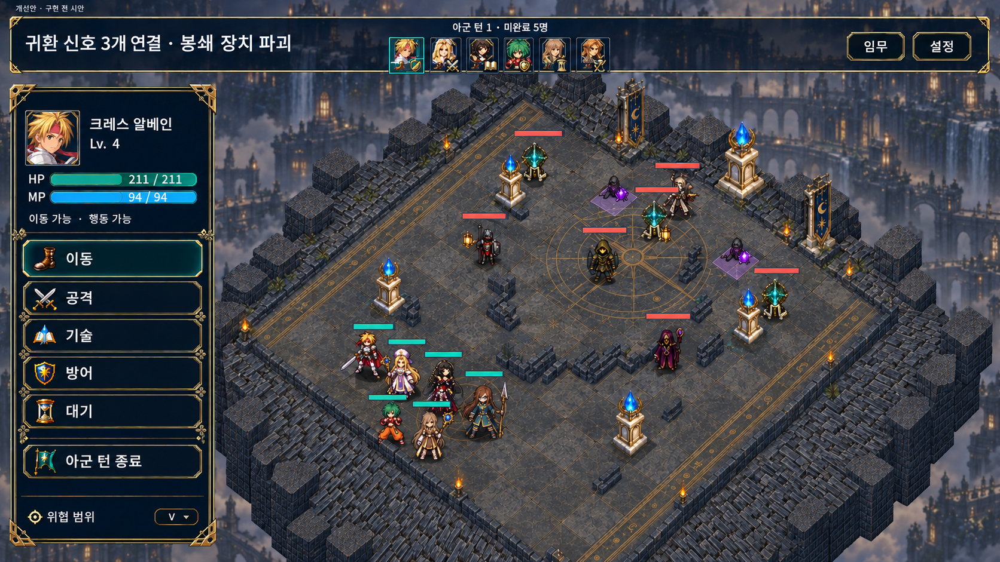
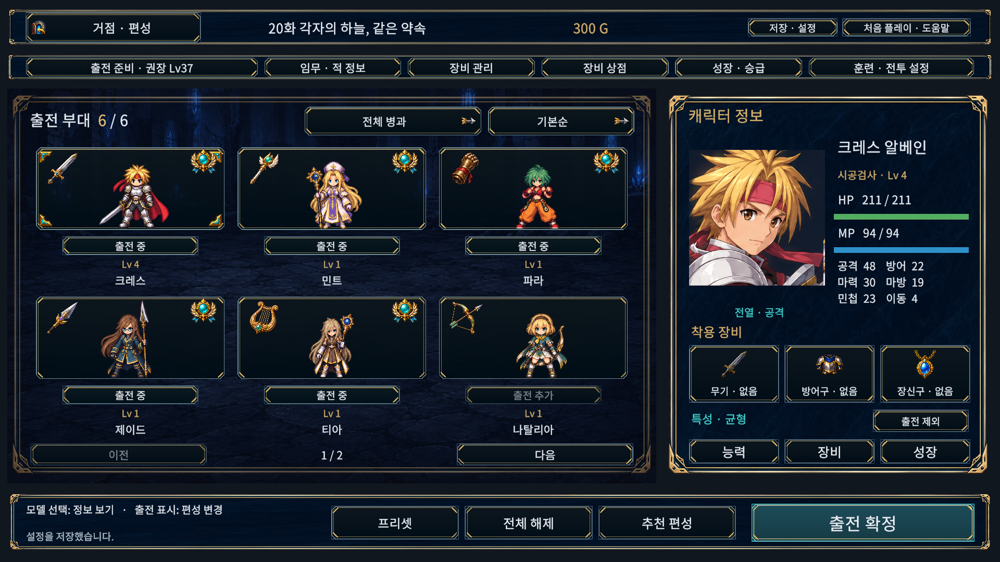
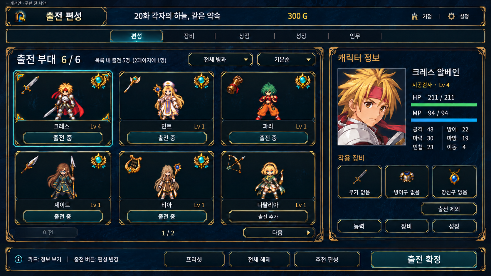
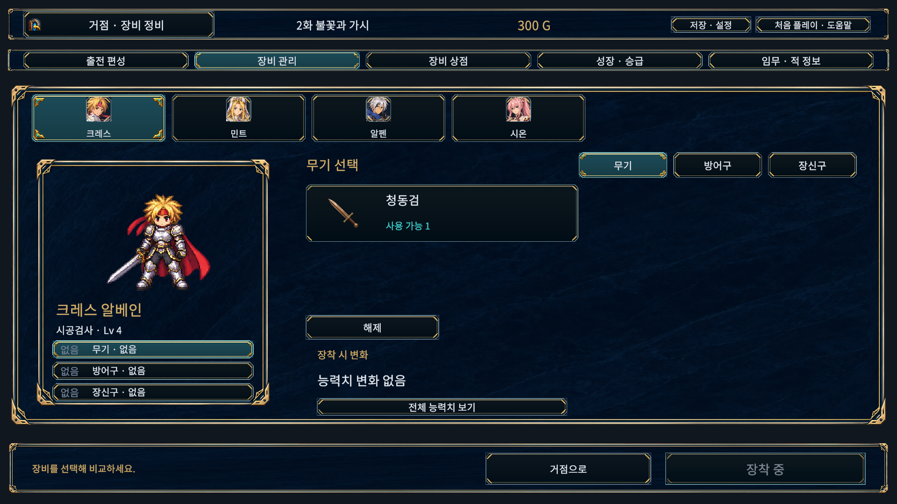
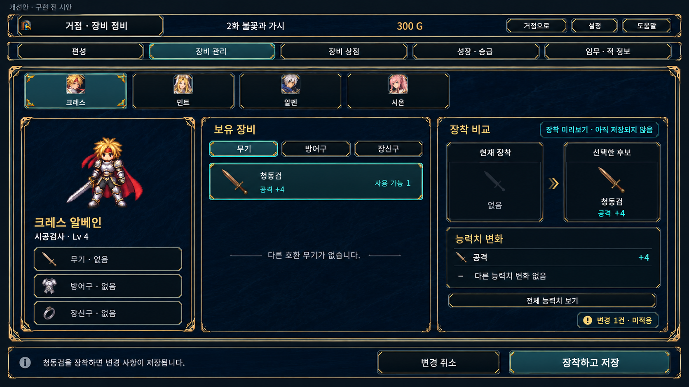

01
전투 공간에 시선 모으기
- 현재
- 원경과 지면의 세부 표현이 전장 정보와 시선을 나눕니다.
- 제안
- 배경·바닥 대비를 낮추고, 카메라 전경에 실제 전투 공간을 확보합니다.
- 효과
- 이동할 칸과 캐릭터의 위치를 더 빨리 찾습니다.
TalesTactics
GRAPHICS & UX PROPOSAL · 2026.10
세 화면으로 보는 다음 디자인
풍경의 분위기는 살리고, 판단에 필요한 정보는 가까이 둡니다.
전투·6명 편성·장비 정비의 실제 화면과 개선 방향을 함께 살펴보세요.
전경의 전투 공간을 넓게 잡고, 선택한 동료의 상태와 명령을 한곳에서 읽습니다.

기준 소스 3834a36 · 실제 캡처의 색상과 구도를 그대로 표시

전장 가독성 · 상태와 명령의 묶음 · 아군 6명 상태 구분
기존 아군 턴 자유 선택 흐름을 전제로 합니다. 여섯 동료의 선택·행동 가능·완료 상태를 구분해 표시하는 방향입니다. 시안의 지형·유닛 배치는 구도 설명용이며 실제 타일 위치를 재현한 검증 결과가 아닙니다. 이미지에서 축약된 SP·능력·전술 도움말은 실제 구현 시 접근 경로를 유지합니다.
캐릭터의 정체성과 출전 상태를 같은 카드에서 읽고, 조회와 출전을 분명하게 구분합니다.

기준 소스 3834a36 · 현재 페이지와 실제 출전 인원을 구분

3열 × 2행 유지 · 조회 선택과 출전 휘장 분리 · 확정 중심 강조
출전은 총 6명입니다. 이 페이지에서 5명이 출전 중이며, 나머지 1명은 다음 페이지에 있습니다. 현재 페이지의 나탈리아는 미출전 상태입니다.
현재 장비와 교체 후보를 가까이 놓고, 초안에서 저장 완료까지의 상태를 명확하게 만듭니다.

기준 소스 3834a36 · 장비 선택과 적용·저장이 구분된 현재 흐름

현재 / 후보 비교 · 수량이 있는 짧은 목록 · 장착하고 저장
현재 캡처는 후보 선택 전, 개선안은 청동검을 선택한 저장 전 초안의 예시입니다. 공격 +4는 기존 장비 데이터이며 새 보너스를 추가한 것이 아닙니다. 장착하고 저장 이후에만 실제 적용 상태로 바뀝니다.
위 이미지는 데스크톱 화면을 위한 시안입니다. 아래는 좁은 게임 화면에서의 배치 원칙이며, 해당 해상도로 구현하거나 검증한 결과가 아닙니다.
명령과 예측을 동시에 펼치지 않고 현재 단계에 맞는 한 영역을 표시합니다. 아군 상태와 전투 공간은 계속 볼 수 있게 유지합니다.
여섯 카드를 유지하면서 부가 설명을 접습니다. 이름·레벨·출전 상태와 필터·페이지 이동은 바로 확인할 수 있게 남깁니다.
큰 캐릭터 모델을 접고 현재 / 후보 비교와 장착·저장 버튼을 유지합니다. 외형 미리보기는 필요할 때 펼칩니다.
예측 요약·구매 후 바로 장착·캐릭터 전환 시 초안 보존은 추가 UX 제안이며 현재 구현 완료가 아닙니다.
화면 디자인과 별도로 남아 있는 후속 구현 항목입니다.
구매 비교 대상에서도 미합류 동료가 제외되도록 합류 조건을 일관되게 적용합니다.
후속 구현현재 캠페인에 영향을 주지 않는 옵션의 비활성 상태와 적용 범위를 명확히 안내합니다.
후속 구현화면에서 보이는 카드·버튼의 위치에 맞춰 방향키 포커스 이동을 정리합니다.
후속 구현